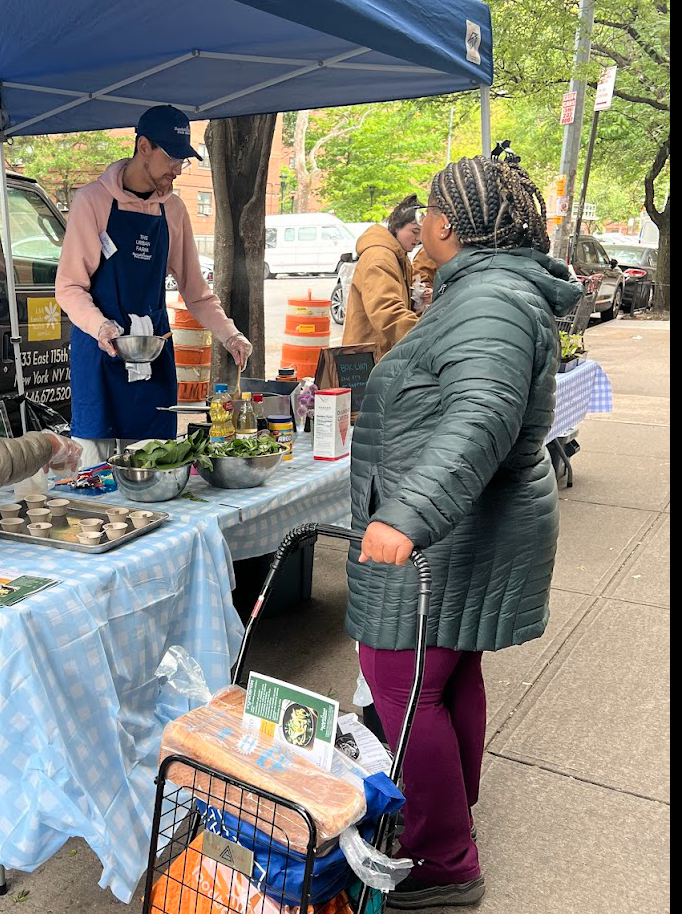

Latest Updates
Stay informed about our latest programs, events, and community impact stories.
READ MOREEmpowering youth through hands-on culinary education, building confidence in the kitchen, and fostering healthier communities through accessible food programming.

.jpg)
Originally started as an afterschool club in 2023, The Student Kitchen was founded to provide hands-on culinary programming. We started as an afterschool club leading students through recipes and helping expand their culinary knowledge. Since then, The Student Kitchen has grown to provide classes for over 200 students and has served over 1,000 guests, including families, students, and school staff.
In June 2025 The Student Kitchen received the Idealist Action Incubator and Communitas America grant to jumpstart this work. We currently run several ongoing workshop series, as well as food demos and catering for community organizations. Our partners include Bushwick Ayuda Mutua (BAM), Collective Focus, Asian Americans for Equity, Flushing International High School, and others.
.jpg)
Ben Averbuch began working in Boston Public Schools, and then as a 9th grade history teacher in Brooklyn. During his time teaching, he noticed a stark lack of home economics (Food Consumer Sciences) programs, as well as a lack of nutritional and health education. He developed an afterschool club to work with students and build their confidence in the kitchen. In 2023 he founded the Student Kitchen.
For the summer 2025 season, Ben also worked as the Community Food Educator for Randall's Island Park Alliance, leading cooking workshops and serving samples at a local food pantry. Ben currently runs cooking programs both through The Student Kitchen as well as partner organizations such as Bronx Eats, Beazer's Gardens, and Green Beetz. He also works as an instructor for Culikid, an organization devoted to providing cooking and skills-based workshops to neurodivergent students.
Stay informed about our latest programs, events, and community impact stories.
READ MOREDiscover how The Student Kitchen is making a difference in NYC communities.
READ MORE
Learn about our cooking workshops and the skills students are developing.
READ MORESee what the Student Kitchen has been up to as of lately!
READ MORE